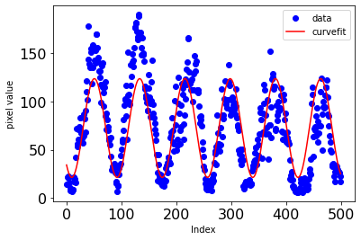

Educational materials
I am, generally speaking, a big fan of making my own summary write-ups of complex research topics that I study. This is partially because it helps me digest the material while I do so and partially because I find that there are often not beginner-friendly texts on these topics available. So I take it upon myself to make one :) These often get distributed to undergraduates and junior graduate students in my group. I hope that you may also find these writeups useful, and may consider distributing them to your students! They are generally written in a very silly, light-hearted tone that attempts to make the dense material more fun. If you have any feedback or corrections on any of these materials, feel free to email me at hannahrhasson@gmail.com.
Introduction to Pulsed-Power Drivers and the High Energy Density Physics They Can Study
This document was meant to be a way to boil down some of the main concepts in “A Primer on Pulsed Power and Linear Transformer Drivers for High Energy Density Physics Applications” by Ryan McBride et al. That paper is meant to be an introduction to the field of pulsed-power drivers and high energy density physics experiments that can be done with these kinds of drivers. It is not necessarily a replacement for reading the original paper, but should instead be thought of as a gentle guide that eases one into the important ideas in that paper. Plus, this writeup has lots more pictures and jokes :)
Introduction to Thomson Scattering Theory and Implementation on Pulsed-Power Drivers

This document is an introduction to both the noncollective and collective regimes of Thomson scattering for someone with a physics background who is unfamiliar with the topic. I largely focus on what determines the scattering regime, what the spectral features depend on, and how we implement this kind of diagnostic for a pulsed-power experiment.
Python for High School Students: A Crash-Course in Three Days
Coding is an essential tool for most scientists today, so we decided to focus one week of the internship on teaching the students Python. Rather than build a curriculum for this crash course from scratch, I opted to base this course on an undergrad-level astronomy python minicourse that one of my friends, graduate student Jackie Champaign, taught when I was an undergrad at UT Austin. I took the base content of the first three days of her course and simplified the math/explanations to a high school level, adding more emphasis on concrete examples and developing comfort with syntax. No prior coding experience was assumed for the students in the course, and each lesson was taught in about 2 hours.
The course is quite condensed, but provides basic working understanding of handling data in python. Each lesson has interactive questions within the "lecture," so instructors should pause and let students work these problems individually or together as you go along. The solutions to these problems are in the "solutions" directory. Here is a summary of the contents of each day's lesson:
Day 1- Importing packages
- Setting variables
- Variable types
- Python arithmetic
- Arrays: populating, indexing, manipulation and attributes
- If statements
- For loops
- User-defined functions
- Plotting basics
- Loading in files
- What is a Gaussian?
- Fitting a function to data
- Plotting 2D image data
- Taking lineouts of 2D data
If you wish to see the code, check out either my Github repository or a webpage version of the notebooks. Please let me know if you use my lessons! A big shoutout to Ray Parker and Aidan Bachmann for the feedback they provided while I developed the course.